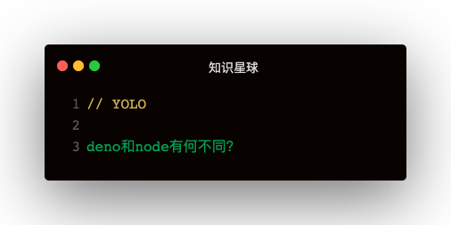

个人理解：Deno并不是下一代Node，更类似浏览器
Node的问题，作者重写deno的初衷
- ES6标准引入了大量新的语法特性：Promise接口，async函数和ES模块，node的模块格式CommonJS与ES模块不兼容，迟迟无法完全支持ES模块
- node的模块管理工具npm，逻辑越来越复杂，node_modules极其庞杂
- node几乎没有任何安全措施，只要下载了外部模块，就只好听任别人的代码在本地运行，进行各种读写操作
- node功能不完整，外部工具层出不穷，让开发者疲劳不堪：webpack，babel等
deno与node的异同
- 安全性
- 与Node相反，Deno默认在沙箱中执行代码：运行时无权访问
- 文件系统：allow-write, allow-read
- 网络：allow-net
- 执行其他脚本，环境变量...
- 与Node相反，Deno默认在沙箱中执行代码：运行时无权访问
- 模块
- 通过url导入代码
- 不需要node_modules
- 一旦下载无需重新下载，缓存存储在本地磁盘上，直到--reload再重新下载
- 通过url导入代码
- 浏览器兼容性
- 支持WEB API，尽量跟浏览器保持一致
- 提供window全局对象
- 支持fetch，worker等WEB标准
- 支持onload，onunload，addEventListener等事件操作函数
- deno所有的异步操作，一律返回Promise
- deno只支持ES模块，不支持CommonJS模块（没有require命令）
- 支持WEB API，尽量跟浏览器保持一致
骚操作：
一直使用url导入很麻烦
方案一：
<!-- dep.js -->
export * from "https://deno.land/std/testing/mod.ts";
<!-- 其他使用test的文件 -->
import { test } from './dep.ts'
方案二：
<!-- 创建一个导入映射json -->
{
"import": {
"http/": "https://deno.land/std/http/"
}
}
<!-- 其他使用的文件 -->
import { server } from "http/server.ts"
<!-- importmap指定导入映射 -->
deno run --importmap=import_map.json index.ts